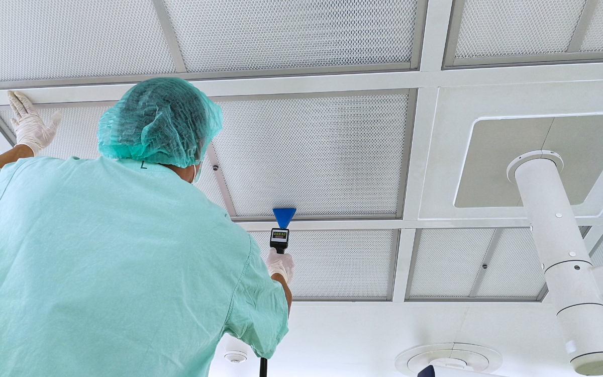

Jak mierzyć integralność filtrów HEPA?
- przygotowanie fotometru i wyznaczenie upstream
- skanowanie filtra, ramy i uszczelnień
- kryterium 0,01% i interpretacja wyniku
- dokumentacja, wynik negatywny, rekwalifikacja po wymianie filtra
Skanowanie fotometrem aerozolowym · kryterium 0,01% · interpretacja i dokumentacja wyników
- Czasok. 1,5 godziny
- Poziompodstawowy / średniozaawansowany
- Formaszkolenie online + przykłady + ćwiczenia + checklista
Test integralności filtra HEPA jest jednym z podstawowych badań wykonywanych podczas kwalifikacji i rekwalifikacji pomieszczeń czystych oraz systemów UDAF. Samo jego wykonanie nie sprowadza się jednak do przesunięcia sondy po powierzchni filtra.
Gdzie powinien być mierzony upstream? Jak szybko prowadzić sondę i jak daleko od filtra? Co właściwie oznacza wskazanie 0,01%? Czy wzrost ΔP świadczy o nieszczelności? Co zrobić, gdy podczas skanowania pojawi się wynik poza kryterium?
W kursie przechodzimy przez cały test krok po kroku — od przygotowania układu pomiarowego aż do oceny i udokumentowania wyników.
Czego nauczysz się podczas kursu?
Po ukończeniu kursu będziesz wiedzieć:
- jaki jest rzeczywisty cel testu integralności HEPA,
- czym różni się test integralności instalowanego filtra od fabrycznego badania jego skuteczności,
- czym jest „final filter” w kontekście ISO 14644-3 i EU GMP Annex 1,
- jak przygotować fotometr aerozolowy do pomiaru,
- gdzie i w jaki sposób mierzyć stężenie upstream,
- jak prawidłowo wykonać skan powierzchni filtra, ramy i uszczelnień,
- skąd pochodzi kryterium 0,01% i jak je interpretować,
- dlaczego pomiar różnicy ciśnień ΔP nie zastępuje testu integralności,
- jak postępować w przypadku wskazania poza kryterium,
- jakie dane należy zachować w dokumentacji kwalifikacyjnej,
- jak podejść do zakresu rekwalifikacji po wymianie filtra HEPA.
Kurs oparty na praktyce
W kursie znajdziesz:
- procedurę testu krok po kroku
- 10 najczęstszych błędów podczas testów HEPA
- praktyczną checklistę przed, podczas i po badaniu
- przykłady obliczeń penetracji
- 3 ćwiczenia problemowe
- przypadek wymiany filtra i określania zakresu rekwalifikacji
- dodatkowy moduł techniczny dotyczący metodologii skanowania
Dla kogo?
Kurs przygotowałam przede wszystkim dla:
- specjalistów Validation / Qualification / C&Q,
- inżynierów HVAC i Cleanroom,
- pracowników QA i Engineering,
- osób wykonujących lub nadzorujących pomiary HEPA,
- osób rozpoczynających pracę w kwalifikacji pomieszczeń czystych,
- wszystkich, którzy chcą rozumieć nie tylko jak wykonać test, ale również dlaczego wykonujemy go właśnie w taki sposób.
Podstawa merytoryczna
ISO 14644-3:2019 · EU GMP Annex 1 · EN 1822 · ISPE HVAC and Process Equipment Air Filters oraz praktyczne doświadczenia z kwalifikacji i rekwalifikacji systemów HVAC, pomieszczeń czystych i urządzeń z przepływem jednokierunkowym.